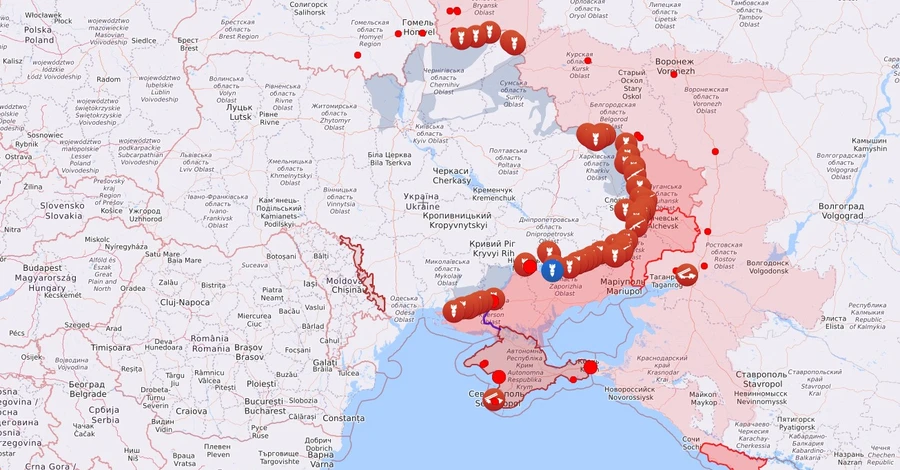

ІІ:РІК
Січень 2023
Карта бойових дій на Січень 2023 року [292]
У січні 2023 вздовж всієї лінії фронту тривали обстріли, активні бойові дії точились на східних ділянках – в районах Бахмута та Соледара, де намагалися наступати росіяни. На початку місяця росіяни перекинули з-під Бахмута під Соледар додаткові сили і спромоглися витіснити ЗСУ з міста (орієнтовно 12-14 січня). 14 січня російські загарбники завдали масованого ракетного удару по цивільній та енергетичній інфраструктурі України. 19 січня Європарламент проголосував за створення спеціального трибуналу для рф та Білорусі. За це рішення проголосували 427 парламентаріїв. 24 січня з'явились підтвердження, що уряд Німеччини погодився надати Україні танки, а наступного дня про надання танків оголосив президент США Джо Байден. 26 січня, після невдалої атаки Шахедами, росіяни здійснили спробу чергового масованого ракетного удару по Україні[141, 142, 143, 144, 145].
Лютий 2023
У лютому 2023 року російські війська зазнавали дедалі більшого тиску. Обстріли тривали по всій лінії фронту, активні бойові дії точилися у східних районах Бахмута, Соледара та Кремінної. В результаті російські окупаційні війська просунулися в східні райони Бахмута, а також на південь і північ від міста, намагаючись відрізати постачання і оточити його. 10 лютого російські війська завдали чергового масштабного ракетного удару по об'єктах енергетичної інфраструктури. Було пошкоджено цивільну та енергетичну інфраструктуру в Запорізькій, Харківській та Хмельницькій областях. В ніч на 16 лютого росія випустила по Україні 36 ракет, 16 з яких були збиті системами протиповітряної оборони. Решта влучила в об'єкти критичної та промислової інфраструктури в Кременчуці, Павлограді, Харкові та Вовчанську. 20 лютого Київ відвідав президент США Джо Байден [146, 147, 148, 149].
Березень 2023
В березні 2023 року, протягом місяця тривали запеклі бої за Бахмут, російським військам вдалося захопити східну та південну частини міста. Окупаційні війська також намагалися атакувати західні частини Кремінної, Авдіївки та Соледара. 17 березня Міжнародний кримінальний суд (МКС) в Гаазі видав ордери на арешт президента росії володимира путіна та уповноваженої при президенті рф з прав дитини марії олексіївни львової-бєлової. 20 березня в окупованому Джанкої сталася серія вибухів, імовірно, за допомогою безпілотників. Було пошкоджено аеродром і залізничний вузол, а також пошкоджено склади з ракетами "Калібр" [150, 151, 152].
Квітень 2023
У квітні 2023 року в Україні тривали воєнні та політичні події, що визначали ситуацію в країні. На воєнному фронті на сході країни продовжувалися активні бойові дії між українськими силами та підтримуваними росіянами сепаратистськими групами. Зокрема, було зафіксовано інтенсивні обстріли і військові провокації вздовж лінії розмежування. Звісно ж значною подією була участь президента України в міжнародних переговорах та саміту з лідерами інших країн, спрямованих на підтримку України у зусиллях з вирішення конфлікту та забезпечення безпеки в регіоні. Також уряд України продовжував активні дипломатичні зусилля для мобілізації міжнародної підтримки та засудження агресії з боку росії [153].
Травень 2023
У травні 2023 року в Україні відбулися важливі військово-політичні події. По-перше, зберігався високий рівень напруженості у триваючому конфлікті з окупаційними військами російської федерації на сході України. Збройні зіткнення між українськими силами та сепаратистами посилилися, особливо в Донецькій та Луганській областях. Головною подією травня стало надання Великою Британією українським військовим крилатих ракет "Storm Shadow". У Бахмуті та його околицях тривали бої, значна частина міста була окупована російськими окупаційними військами, а наприкінці місяця почастішали повідомлення про те, що "вагнер" має намір вивести свою групу з міста [154, 155, 156].
Червень 2023
У червні 2023 року відбулася низка важливих подій. Близько 2:50 ночі 6 червня було зруйновано Каховську ГЕС. Президент України Володимир Зеленський визнав, що прогрес на полі бою був "повільнішим, ніж хотілося б" з моменту початку контрнаступу українських військових. США оголосили про надання Україні 41 пакету військової допомоги на суму 500 мільйонів доларів [157, 158, 159, 160].
Липень 2023
1 липня Генеральний штаб України повідомив, що росія сконцентрувала свої атаки на Лиманському, Бахмутському та інших напрямках, при цьому було відбито до 46 атак. Президент США Джо Байден схвалив надання Україні американських касетних боєприпасів. Голова Національної поліції України Ганна Маляр визнала, що Україна стоїть за руйнуванням Кримського мосту 8 жовтня 2022 року. Президент США дозволив європейським країнам розпочати навчання українських пілотів на винищувачах F-16. Американський Інститут вивчення війни (ISW) проаналізував ситуацію на українському полі бою та заявив про успіхи українських військових. США оголосили про нову військову допомогу Україні у розмірі 1,3 мільярда доларів. Олег Коліков, голова Державної інспекції ядерного регулювання, повідомив, що поблизу окупованої росією Запорізької АЕС пролунали вибухи. За його словами, вибухи були зафіксовані спостерігачами місії МАГАТЕ 26 і 27 липня [161, 162, 163, 164, 165, 166, 167, 168].
Серпень 2023
У ніч на 1 серпня російські окупаційні війська за допомогою безпілотників атакували Салтівський та Шевченківський райони Харкова. Було виявлено, що росія обстрілювала Україну ракетами, які Київ передав москві за газовий борг наприкінці 1999 року. В ніч на 4 серпня 2023 року, СБУ спільно з ВМС України провела спецоперацію в новоросійській бухті. Великий десантний корабель "оленегорский горняк" був підбитий безпілотним катером на воді. У Саудівській Аравії проходить дводенний саміт радників з національної безпеки з 44 країн світу, на якому обговорюється мирне завершення війни. За повідомленням Reuters, Україна мала представити "формулу миру", запропоновану Володимиром Зеленським, росія не отримала запрошення на захід. Відбувся обмін військовополоненими, з російського полону звільнили ще 22 українських військовослужбовців, які брали участь у бойових діях в різних регіонах. Наймолодшому серед них було 23 роки. Загальна сума військової допомоги США Україні з лютого 2022 року перевищила 43 млрд доларів [169, 170, 171, 172, 173, 174].
Вересень 2023
1 вересня українські війська продовжили просування в напрямку Бахмута, де, за даними ISW, українські піхотні підрозділи зайняли позиції за протитанковими ровами та "зубами дракона", які складають російську лінію оборони в західній частині Запорізької області. Українські війська успішно провели наступальні операції і просунулися вперед під Бахмутом і в західній частині Запорізької області. Загалом експерти дійшли висновку, що українські війська прорвали найсильнішу лінію російської оборони на півдні. Незалежна міжнародна слідча комісія ООН поки що не дійшла висновку, що в Україні відбувається геноцид, але розслідування буде продовжено. Про це заявив голова комісії Ерік Месе, відповідаючи на запитання журналістів. Перші судна, що прямують морським коридором, створеним Україною після провалу "Чорноморської зернової ініціативи", прибули до порту в Одеській області. Українські сили завдали серйозної шкоди штабу Чорноморського флоту в Севастополі. За даними руху "Атеш", жителі і партизани Севастополя допомагали українським силовикам координувати атаку. В результаті знищення штабу Чорноморського флоту ракетами Storm Shadow загинули 34 офіцери, в тому числі віце-адмірал віктор соколов, командувач Чорноморського флоту росії [175, 176, 177, 178, 179, 180, 181, 182, 183].
Жовтень 2023
1 жовтня, вперше в історії ЄС, представники всіх країн-членів неформально зустрілися за межами ЄС. Вони зустрілися з українським урядом у Києві і підтвердили свою підтримку. Українські ІТ-служби зламали ворожу систему бронювання авіакомпанії "леонардо". Це спричинило системні збої в реєстрації рейсів всередині росії. СБУ виявила, що керівництво російської православної церкви створило власну приватну військову компанію в росії. За вказівкою московського патріархату вони займалися вербуванням та підготовкою найманців для війни проти України. Уряд США звинуватив росію у страті солдатів, які не підкорилися наказам під час війни проти України. Ось що заявив Джон Кірбі: "У нас є інформація, що російські військові фактично страчують солдатів, які не виконують накази". Вважається, що російські командири також погрожували страчувати цілі підрозділи, якщо ті намагатимуться відступити під вогнем з боку України [184, 185, 186, 187, 188].
Листопад 2023
2 листопада президент росії володимир путін підписав закон про скасування ратифікації Договору про всеосяжну заборону ядерних випробувань. Підпис лідера кремля скасував рішення 23-річної давнини. В ніч на 4 листопада російська система протиповітряної оборони була розгорнута поблизу суднобудівного заводу у Керчі, де частина уламків ракети, що розбилася, впала на територій сухого доку. ЗМІ повідомили про пошкодження ракетного корабля "аскольд". Українська розвідка заявила, що нещодавні ядерні випробування росією балістичних ракет були невдалими, що свідчить про серйозні проблеми з можливостями москви щодо доставки ядерної зброї. Міністерство закордонних справ росії оголосило, що росія завершила процедуру виходу з Договору про звичайні збройні сили в Європі, яка була призупинена в 2007 році після повідомлень про плани розгортання протиракетного щита в Польщі та Чехії. Згодом НАТО оголосила, що її члени призупинили дію ДЗЗСЄ на невизначений термін. Президент Європейської Комісії Урсула фон дер Ляєн оголосила, що Комісія отримала пропозиції від України та Молдови розпочати офіційні переговори про вступ до ЄС, а від Грузії - приєднатися до ЄС в якості країни-кандидата. Україна виконала понад 90% необхідних процедур. Представники ЄС погодилися розпочати переговори про вступ з України та Молдови у 2024 році [189, 190, 191, 192, 193, 194, 195, 196].
Грудень 2023
В грудні Президент путін підписав указ про збільшення чисельності російських військовослужбовців на 170 000 осіб, при цьому Міністерство оборони росії назвало розширення НАТО та війну в Україні серед причин цього указу. Твкож у грудні на відео російські окупаційні війська застрелили двох українських солдатів, які намагалися здатися в полон. 6 грудня в московській області в парковій зоні готелю "великий заміський клуб" з мисливської рушниці було розстріляно тіло колишнього депутата і колаборанта Іллі Ківи. Координатор Ради національної безпеки США зі стратегічних і громадських зв'язків Джон Кірбі заявив на брифінгу, що у США залишилися тижні до того, як будуть вичерпані ресурси для надання допомоги Україні. Масована кібератака порушила роботу "Київстар", однієї з найбільших українських компаній мобільного зв'язку, та "Монобак", одного з найбільших банків країни. Відповідальність за атаку взяла на себе хакерська група solntsepek. Європейський Союз (ЄС), за винятком Угорщини, проголосував за "угоду" про початок переговорів про вступ до ЄС з Україною. Однак Угорщина заблокувала виділення Україні 50 млрд євро фінансової допомоги протягом чотирьох років, оскільки прем'єр-міністр Віктор Орбан заявив, що Україна не є частиною ЄС. Японське видання Nikkei Asia повідомило, що під час візиту президента Китаю Сі Цзіньпіна до москви в березні путін оголосив про плани воювати з Україною щонайменше п'ять років. З початку повномасштабного вторгнення російські війська випустили по Україні понад 7 500 ракет [197, 198, 199, 200, 201, 202, 203, 204, 205, 206].